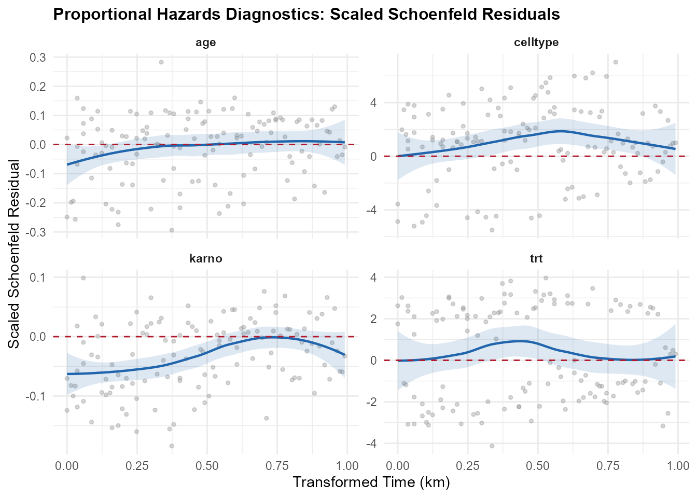
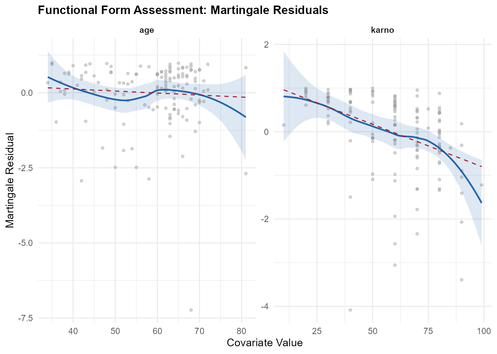
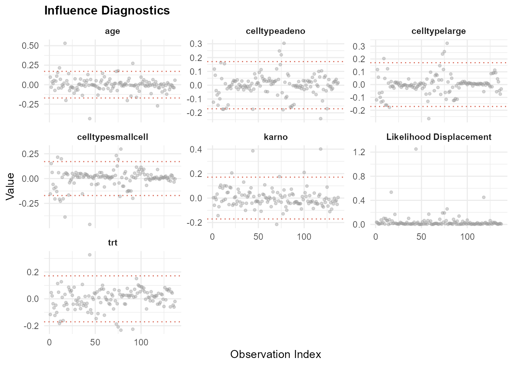
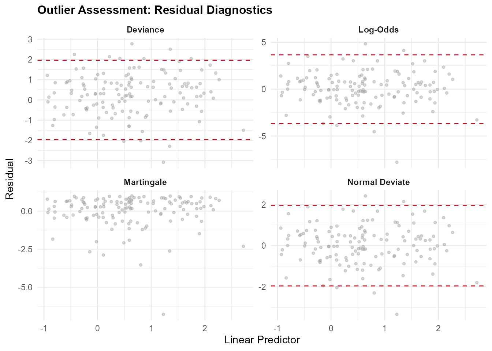
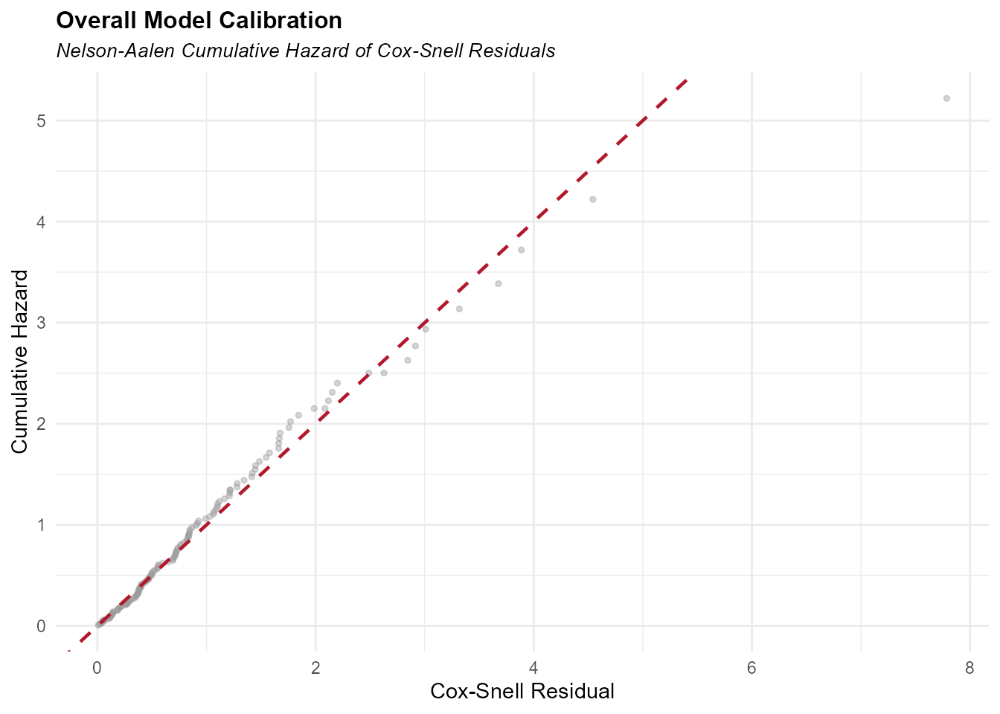

survAudit-introduction.RmdWhen conducting research where the outcome of interest is the time until an event occurs (such as a patient recovering, a machine failing, or a customer churning), standard regression methods like linear or logistic regression fall short. This is because event times are often censored—some subjects complete the study without ever experiencing the event, meaning we only know they survived at least until their last follow-up.
To analyze this type of data, we use survival analysis. The most widely used method is the Cox Proportional Hazards (PH) model.
Instead of predicting the exact time of an event, the Cox model estimates the hazard ratio (HR). The hazard is the instantaneous risk of the event happening at any given moment, and the hazard ratio compares this risk between different groups (e.g., patients receiving a new treatment vs. a standard treatment).
For a Cox model’s hazard ratios to be valid and reliable, the model must satisfy several mathematical assumptions. If these assumptions are violated, the model’s conclusions can be severely biased, potentially leading to incorrect clinical or business decisions.
survAudit?
Traditionally, checking Cox model assumptions requires running separate diagnostic tests and plotting charts from multiple fragmented packages. This makes the diagnostic workflow tedious and difficult to document.
survAudit is designed to solve these issues. It does not
simply wrap existing packages; rather, it implements:
survAudit fits reduced multivariate
models to extract martingale residuals adjusted for other covariates,
fits both a linear model and a LOESS smooth, and uses an adjusted
R-squared ratio to automatically flag non-linear departures.survAudit
creates a self-contained record of model validity. When saved as an
.rds file, this audit trail remains attached to the model
for future peer review, regulatory auditing, or protocol
compliance.survAudit organizes model assumptions into three
categories, presented in order of how they must be addressed by the
analyst:
These assumptions cannot be tested or verified using statistical diagnostics on the observed data. The analyst must justify them qualitatively based on the study design and domain knowledge:
These assumptions are partially informed by statistical metrics, but their severity and impact require clinical or domain judgment:
These assumptions can be rigorously tested and verified using statistical diagnostics:
Let’s walk through an audit using the classic veteran
lung cancer clinical trial dataset from the survival
package.
We fit a Cox model with a mixture of categorical
(celltype, trt) and continuous
(karno, age) covariates:
Run the diagnostic audit using survAudit().
[!NOTE] The
dataparameter insurvAudit()is optional. By default,survAuditwill automatically extract the data frame from the fitted model object (viafit$modelormodel.frame(fit)). However, explicitly providingdata = veteranacts as a safe override and ensures that all diagnostics (especially functional form) can run if the model frame doesn’t store the full original data.
audit <- survAudit(fit, data = veteran)Calling print() on the audit object yields a structured,
high-level summary. The non-identifiable assumptions are presented first
to prompt the analyst for qualitative justification:
print(audit)
#> ── survAudit: Cox PH Model Diagnostic Audit ─────────────────────
#>
#> Model: Surv(time, status) ~ trt + celltype + karno + age
#> Events: 128 / 137 (6.6% censored)
#> EPV: 21.3 (adequate)
#>
#> ── Non-Identifiable Assumptions (analyst justification required)
#>
#> [ ] Independent censoring
#> [ ] Absence of unmeasured confounding
#>
#> ── Partially Assessable Assumptions ─────────────────────────────
#>
#> Outlier Impact
#> Flagged observations: 11 by deviance residuals, 5 by log-odds, 5 by normal deviate.
#> Missing Data
#> Complete data: no missing values across 4 covariate(s).
#>
#> ── Statistically Assessable Assumptions ─────────────────────────
#>
#> Proportional Hazards
#> Global test: p = <0.001
#> celltype: p = 0.002
#> karno: p = <0.001 (increasing effect over time)
#>
#> Functional Form
#> karno: no departure from linearity detected
#> age: no departure from linearity detected
#>
#> Influence Stability
#> Max |dfbetas|: 0.53 (obs #17, covariate: age)
#> Max likelihood displacement: 1.25 (obs #44)
#>
#> Event Sufficiency
#> EPV = 21.3 (adequate)
#>
#> Collinearity
#> No collinearity detected; max VIF/scaled GVIF = 1.24.
#>
#> Use summary() for detailed diagnostics. Use plot() for visual assessment.Notice the empty boxes [ ] under non-identifiable
assumptions. These represent assumptions that have not yet been
qualitatively justified by the analyst.
To complete the audit trail, you can assign justifications directly to the non-identifiable assumptions in the R object:
# Document independent censoring justification
audit$assumptions$non_identifiable$independent_censoring$justification <-
"Censoring is administrative (end of study period) and patient drop-out is unrelated to disease severity."
# Document absence of unmeasured confounding
audit$assumptions$non_identifiable$unmeasured_confounding$justification <-
"Pre-specified baseline confounders (Karnofsky performance score, age, celltype) were controlled."If we print the audit again, these assumptions will show as completed
[x]. Storing these justifications inside the R object
ensures they are saved when you write the object to an RDS file (e.g.,
saveRDS(audit, "model_audit.rds")), creating a persistent
audit trail.
For a deeper dive into the metrics and tables, use
summary():
summary(audit)
#> ── survAudit: Detailed Diagnostic Report ────────────────────────
#>
#> Audit time: 2026-06-09 13:30:36
#>
#> ── Data Context ─────────────────────────────────────────────────
#>
#> Sample size: 137
#> Events: 128
#> Censored: 9 (6.6%)
#> Time range: [1.00, 999.00]
#> Median time: 80.00
#> Time IQR: [25.00, 144.00]
#> Tied event times: 55 (43.0%)
#> Counting process: no
#> Missing data: none (complete case data)
#>
#> ── Model Information ────────────────────────────────────────────
#>
#> Formula: Surv(time, status) ~ trt + celltype + karno + age
#> Coefficients: 6
#> Tie method: efron
#> Converged: yes
#>
#> ── Overall Model Calibration ────────────────────────────────────
#>
#> Cox-Snell residuals computed.
#> (See plot(audit, which = "calibration") for the Nelson-Aalen cumulative hazard plot.)
#>
#> ── Proportional Hazards (cox.zph) ───────────────────────────────
#>
#> Transform: km
#>
#> Variable chisq df p
#> ────────────────────────────────────────────────────
#> karno 12.977 1 <0.001
#> celltype 14.884 3 0.002
#> age 1.874 1 0.171
#> trt 0.284 1 0.594
#> GLOBAL 29.179 6 <0.001
#>
#> Detected trends:
#> karno: increasing effect over time
#> age: increasing effect over time
#>
#> ── Functional Form Assessment ───────────────────────────────────
#>
#> Continuous variables assessed: karno, age
#>
#> karno: no departure detected
#> age: no departure detected
#>
#> ── Influence Diagnostics ────────────────────────────────────────
#>
#> Threshold (2/sqrt(n)): 0.1709
#> Max |dfbetas|: 0.5312 (obs #17, age)
#> Max LD: 1.2508 (obs #44)
#> Flagged observations: 20
#>
#> Top 5 most influential observations (by LD):
#>
#> Obs LD Max |dfbetas|
#> ────────────────────────────────────
#> 44 1.2508 0.4616
#> 17 0.5348 0.5312
#> 118 0.4498 0.4006
#> 78 0.2567 0.3227
#> 73 0.1901 0.2482
#>
#> ── Outlier Assessment ───────────────────────────────────────────
#>
#> *Note: Deviance residuals are the most robust symmetric measure for outliers,
#> especially in heavily censored datasets.*
#>
#> Flagged deviance residuals (|resid| > 1.96): 11
#> Flagged log-odds residuals (|resid| > 3.66): 5
#> Flagged normal deviate residuals (|resid| > 1.96): 5
#>
#> Top 5 largest deviance residuals:
#>
#> Obs Deviance Resid
#> ────────────────────────
#> 44 -3.0770
#> 85 2.7735
#> 77 2.5064
#> 21 -2.2924
#> 15 2.2521
#>
#> ── Event Sufficiency (Events Per Variable - EPV) ────────────────
#>
#> Events: 128
#> Estimated parameters (coefs): 6
#> Events Per Variable (EPV): 21.3
#> Assessment: adequate
#>
#> ── Collinearity Diagnostics (VIF) ───────────────────────────────
#>
#> Threshold: VIF > 5 (or scaled GVIF^(1/(2*Df)) > 2.236 for multi-Df terms)
#>
#> Term GVIF Df GVIF^(1/(2*Df))
#> ────────────────────────────────────────────────────────────
#> trt 1.245 1 1.116
#> celltype 1.287 3 1.043
#> karno 1.158 1 1.076
#> age 1.149 1 1.072
#>
#> No collinearity issues detected (all thresholds satisfied).
#>
#> ── Assumption Ontology ──────────────────────────────────────────
#>
#> Non-Identifiable:
#> - Independent censoring [justified: Censoring is administrative (end of study period) and patient drop-out is unrelated to disease severity.]
#> - Absence of unmeasured confounding [justified: Pre-specified baseline confounders (Karnofsky performance score, age, celltype) were controlled.]
#>
#> Partially Assessable:
#> - outlier_impact: Flagged observations: 11 by deviance residuals, 5 by log-odds, 5 by normal deviate.
#> - missing_data: Complete data: no missing values across 4 covariate(s).
#>
#> Statistically Assessable:
#> - proportional_hazards: Global cox.zph test significant (p = <0.001); 2 of 4 covariate(s) flagged at alpha = 0.05.
#> - functional_form: No departures from linearity detected among 2 continuous covariate(s).
#> - influence_stability: Max |dfbetas| = 0.5312 (obs 17, variable 'age'); max likelihood displacement = 1.2508 (obs 44); 20 observation(s) exceed dfbetas threshold.
#> - Collinearity: No collinearity detected; max VIF/scaled GVIF = 1.24.
#> - event_sufficiency: Events-per-variable ratio = 21.3 (128 events / 6 parameters); classified as 'adequate'.The summary() output provides a complete, structured
view of all statistical tests and data profiles, organized into the
following sections:
cox.zph table containing the chi-squared statistic, degrees
of freedom, and p-value for each covariate, sorted by p-value ascending
to highlight potential violations, followed by the global test.You can generate high-quality ggplot2 diagnostic plots
using the plot() method. The S3 plot() method
supports a which parameter to select specific diagnostic
panels. The available options for which are:
"ph": Plots scaled Schoenfeld
residuals against transformed survival time for each covariate to
visually check the proportional hazards assumption."functional": Plots adjusted
martingale residuals against continuous covariate values to assess the
linearity assumption (functional form)."influence": Visualizes
observation-level influence metrics including standardized DFBETAs (with
threshold limits) and likelihood displacement."outliers": Displays four panels of
residuals (Martingale, Deviance, Log-Odds, and Normal Deviate) against
the linear predictor to detect outlier observations."calibration": Plots the Nelson-Aalen
cumulative hazard of the Cox-Snell residuals against the residuals
themselves to verify overall model fit.Below are the plots generated from our veteran dataset
model, along with instructions on what we see, how to interpret them,
and their limitations.
This panel plots scaled Schoenfeld residuals against transformed survival time, overlaying a blue LOESS smooth along with its semi-transparent 95% confidence bands:
plot(audit, which = "ph")
trt, celltype,
karno, age) display relatively flat blue LOESS
lines centered close to the horizontal 0 reference line. This indicates
that the effect of these variables does not change systematically over
time.strat(celltype)).cox.zph) can have low statistical power in small datasets
(failing to flag real violations) and can be overly sensitive in very
large datasets (flagging minor, clinically irrelevant departures from
proportionality).This panel plots martingale residuals from a reduced model (excluding the continuous covariate) against the continuous covariate’s values, overlaying a blue LOESS smooth with its 95% confidence bands and a dashed red linear fit:
plot(audit, which = "functional")
karno), the blue LOESS smooth is slightly curved
but closely tracks the straight dashed red line, suggesting that a
linear representation is reasonable.age), the blue LOESS line is
very close to the red dashed straight line, showing no departure from
linearity.ns(karno, df = 3)).karno and
age here), it mathematically confirms that the linear
assumption is statistically acceptable and wiggles are not
significant.span parameter (controlling line
smoothness) and can show artificial curvature at the boundaries of the
data where data points are sparse.This panel visualizes standardized DFBETAs and Likelihood Displacement (LD) values:
plot(audit, which = "influence")
robust = TRUE in
coxph).This panel displays four residual plots (Martingale, Deviance, Log-Odds, and Normal Deviate residuals) plotted against the model’s linear predictor:
plot(audit, which = "outliers")
This panel plots the empirical cumulative hazard of the Cox-Snell residuals against the residuals themselves, overlaying a dashed 45-degree reference line:
plot(audit, which = "calibration")
By standardizing both testable and non-testable model checks,
survAudit helps you deliver transparent, robust survival
analysis results suitable for clinical protocols and scientific
publication. Use summary() and plot() to
diagnose model fit, and document justifications on the object itself to
check off non-identifiable assumptions.